Префектура Фукуи · Оно и Кацуяма · вода и святыни
Оно и Кацуяма у подножия Хакусана: родники, древнее святилище и дзэнский храм
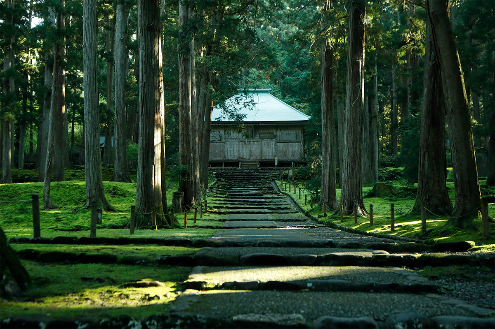
Гора Хакусан веками считалась обителью богов, а её снега питают родники всей округи. Мы проехали по двум городам у её подножия, Оно и Кацуяме, где вода и вера до сих пор определяют жизнь.
Гора
Белая вершина и первая тропа паломников
Хакусан стоит сразу на границе трёх префектур: Исикавы, Фукуи и Гифу. Это не одна вершина, а целый хребет. Главная, Годзэнгаминэ, поднимается на 2702 метра, рядом с ней стоят Онандзи и Бэссан, и эти три пика с древности почитали как священные. Зимой хребет становится белым от снега, отсюда и название «белая гора». На склонах начинаются четыре реки, среди них Кудзурю, главная река Фукуи, поэтому Хакусану здесь поклонялись прежде всего как источнику воды.

Гору открыл для паломников монах Тайтё (682–767). По преданию, он долго молился в горах Этидзэна, как в старину называли северную часть нынешней префектуры Фукуи, и мечтал подняться на Хакусан, который видел издалека. Однажды ему явилось божество горы в облике знатной женщины и позвало к себе. В 717 году Тайтё поднялся на вершину, а позже его вызвали в столицу молиться об избавлении от мора. В 2017 году отмечали 1300 лет со дня, когда гору открыли.
К вершине вели три паломнические тропы, их называли дзэндзёдо: из провинций Кага, Этидзэн и Мино. Тропу из Этидзэна проложили первой, поэтому её звали ещё «главной дорогой Хакусана». Именно у начала этой тропы лежат Кацуяма и Оно. Снег, который гора щедро посылает в долины, весной превращается в талую и родниковую воду, и эти места до сих пор называют городами воды.
Святилище
Хэйсэн-дзи Хакусан: тысяча лет у входа на гору
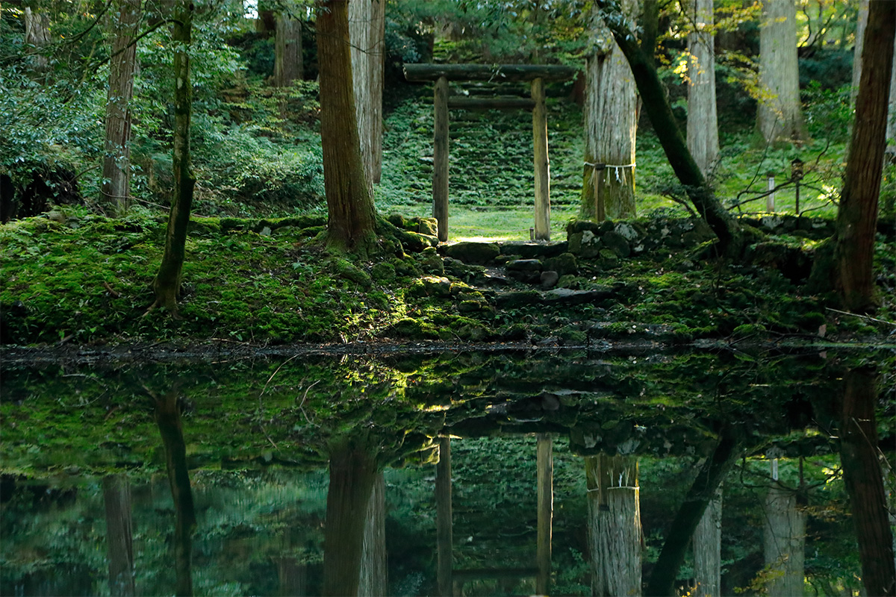
Святилище основал сам Тайтё в 717 году. Говорят, по дороге к вершине он остановился у пруда и стал молиться, и тогда ему явился бог Хакусана, который и указал путь наверх. Пруд Митараси, тот самый по преданию, до сих пор полон воды.
С эпохи Хэйан (794–1185) отсюда начинался подъём на Хакусан со стороны Этидзэна. В XVI веке, в пору расцвета, здесь стояли 48 святилищ и 36 храмовых залов, а монашеских жилищ было около 6000. В 1574 году всё сгорело в войне, которую вели вооружённые общины последователей буддийской школы Икко. Каким огромным был этот храмовый город, можно понять по гигантским каменным основаниям, оставшимся у зала для молитв.
У каждой из трёх троп был свой храм, где останавливались паломники. После 1868 года, с началом эпохи Мэйдзи, храм на стороне Этидзэна стал святилищем Хэйсэн-дзи Хакусан, а храмы на тропах Кага и Мино тоже превратились в святилища. По всей стране около 2700 святилищ Хакусан.
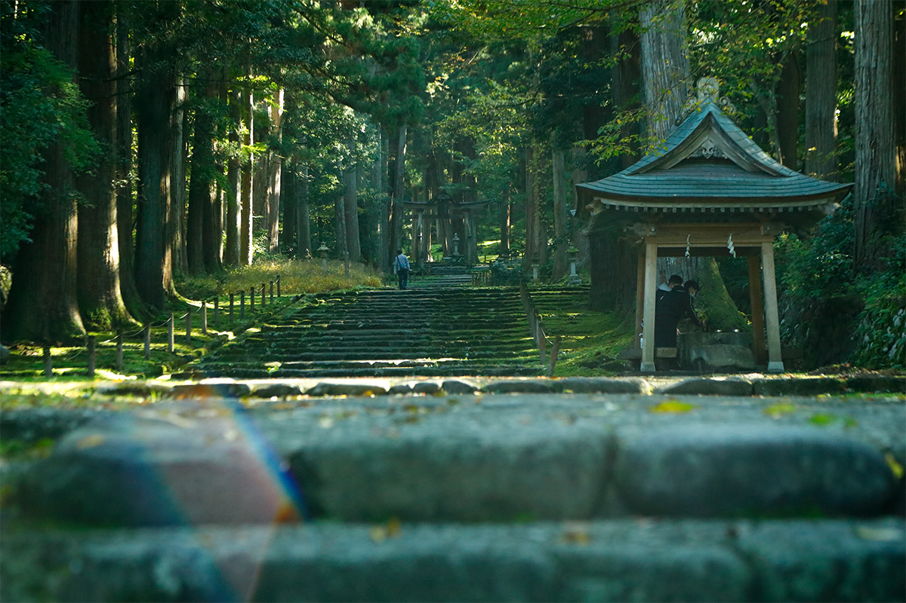
С горой связаны и старинные представления. Поклонение Хакусану примерно с X века тесно связано со школой Тэндай и её главным храмом Энряку-дзи на горе Хиэй, и при многих храмах этой школы Хакусан почитают как покровителя, а при святилищах сохранились танцы и театральные действа. Этидзэн в Средние века славился саругаку, предшественником театра но, и следы этого видны по всей префектуре: в Мидзуми играют но и дэнгаку, а в Итодзаки исполняют «танец Будд».
Святилище Хэйсэн-дзи Хакусан, исторический памятник
- Адрес
- префектура Фукуи, Кацуяма, Хэйсэндзи-тё, Хэйсэндзи
- Телефон
- +81 779-88-8117 (отдел торговли, промышленности и культуры города Кацуяма)
- Часы работы
- территория открыта всегда
- Выходные
- нет
- Сайт
- heisenji.jp
Сакэ
Ippongi Kubohonten: вода с горы Хоондзи
Сакэварня Ippongi Kubohonten хранит имя «Иппонги», под которым когда-то поставляли сакэ ко двору правителей Кацуямы. За основу здесь взяли школу пивоваров Намбу и годами подгоняли её под климат северо-восточного Этидзэна. Так получилось сакэ, которое жители Кацуямы любят много лет: сухое, с чистым коротким послевкусием.
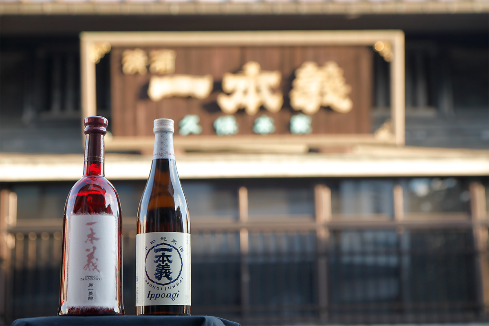
Воду для сакэ берут из подземного потока горы Хоондзи, одной из вершин, продолжающих хребет Хакусан. Её жёсткость всего 27 мг/л, это очень мягкая вода, и именно она, по словам сакэварни, даёт свежий вкус, который не надоедает. Рис только местный, из северо-восточного Этидзэна, одного из главных рисовых районов префектуры. С 2022 года здесь продают и дайгиндзё из нового сорта «Сакахомарэ». Его вывела сельскохозяйственная опытная станция Фукуи, та самая, что создала знаменитый рис косихикари.
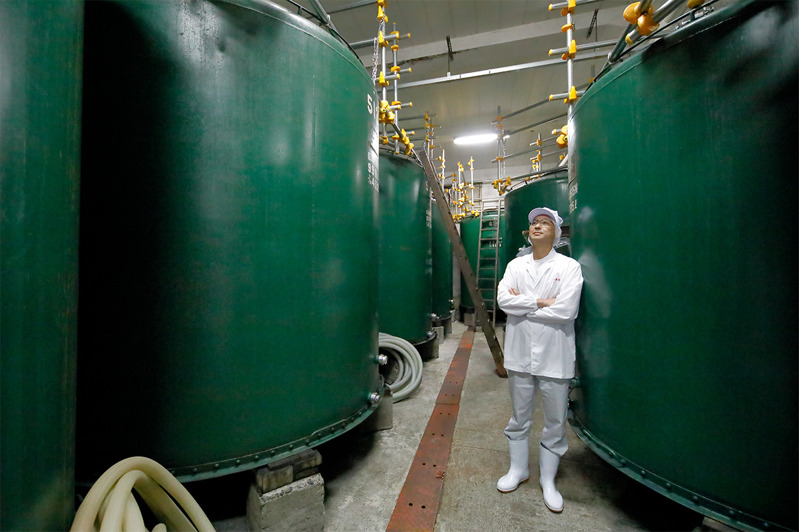
Купить сакэ можно в фирменной лавке «Кацуяма сюхо».
Ippongi Kubohonten
- Адрес
- префектура Фукуи, Кацуяма, Сава-тё, 1-3-1
- Телефон
- +81 779-87-2500
- Сайт
- ippongi.co.jp
«Кацуяма сюхо», фирменная лавка
- Адрес
- префектура Фукуи, Кацуяма, Сава-тё, 1-7-31
- Телефон
- +81 779-87-6222
- Часы работы
- 9:30–18:30
- Выходные
- суббота, воскресенье, праздники
Рёкан
«Огия»: ужин на родниковой воде у Осёдзу
Город Оно вырос вокруг замка, когда сюда пришёл Нагатика Канамори (1524–1608), полководец Нобунаги Оды (1534–1582). Городу больше 400 лет, и повсюду здесь бьют чистые родники. Самый известный из них, Осёдзу, внесён в список ста лучших источников воды Японии.
В двух шагах от Осёдзу около 70 лет работает рёкан «Огия». Его хвалят за подземную воду, которой здесь много, и за сезонные ужины кайсэки из местных продуктов. Летом подают аю из чистых горных рек, осенью местный таро «Камисё сатоимо», зимой краба Этидзэн-гани. На верхнем этаже есть мужская баня с видом на замок Этидзэн-Оно, который называют «замком в небе».
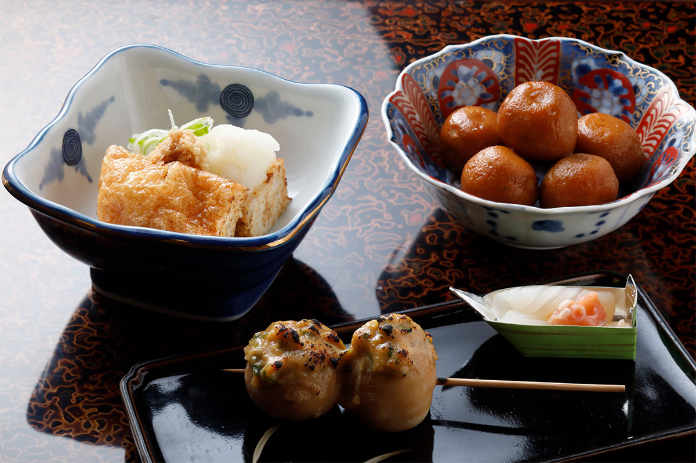
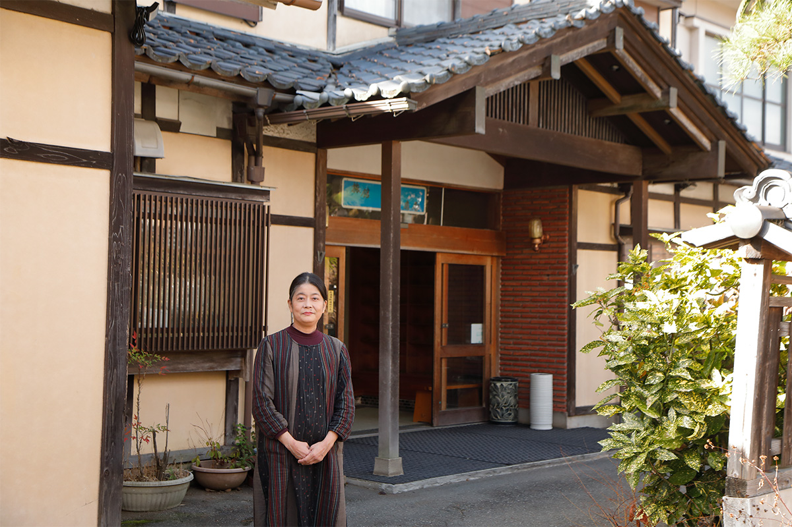
Рёкан «Огия»
- Адрес
- префектура Фукуи, Оно, Идзуми-тё, 6-10
- Телефон
- +81 779-65-5858
- Номера
- 15
- Цены / Вход
- с ужином и завтраком от 12 100 иен (налог и сервисный сбор включены)
- Заезд / выезд
- 15:00 / 10:00
Дзэн
Хокё-дзи: второй дом школы Сото
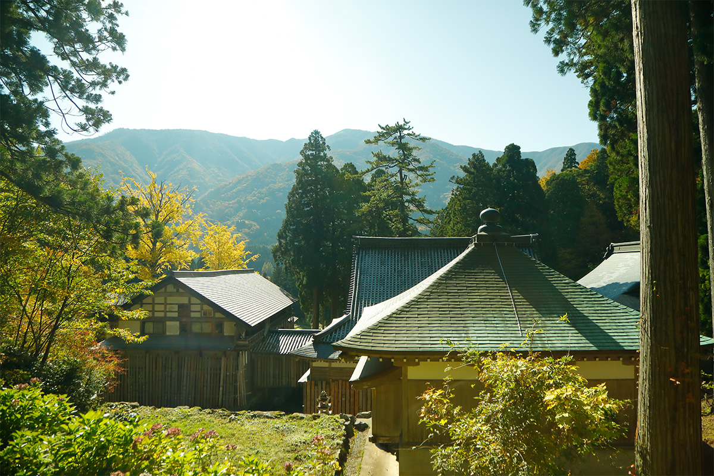
Храм Хокё-дзи стоит примерно в 12 км от центра Оно, у подножия горы Гэнампо высотой 1440,7 метра. Он принадлежит дзэнской школе Сото и считается её вторым центром практики после знаменитого Эйхэй-дзи. Монахи днём и ночью занимаются здесь сидячей медитацией.
Храм основал Дзякуэн (1207–1299), монах из Китая времён Южной Сун. В XIII веке Догэн (1200–1253), будущий основатель школы Сото, отправился туда изучать дзэн и познакомился с Дзякуэном. Тот, говорят, так проникся уважением к Догэну, что последовал за ним в Японию. Территория храма полна строгой тишины. Здесь стоят зал Хатто с главной святыней, зал для медитации и зал основателя, где хранят поминальные таблички настоятелей. Неподалёку можно увидеть старый дом семьи Хасимото: его перенесли сюда, и он охраняется государством как важный объект культурного наследия.
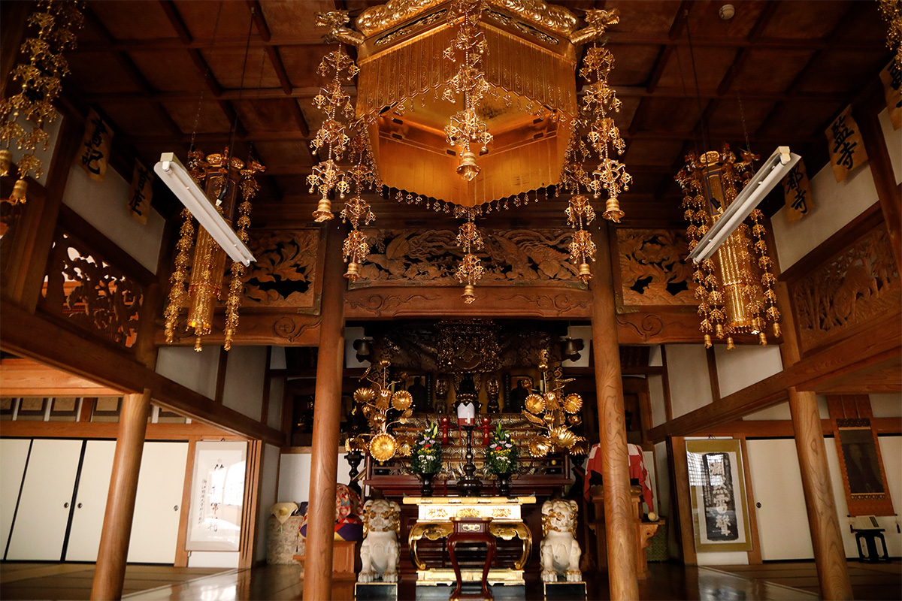
Храм Хокё-дзи
- Адрес
- префектура Фукуи, Оно, Хокёдзи, 1-2
- Телефон
- +81 779-65-8833
- Часы работы
- 8:00–17:00
- Выходные
- нет
Ещё
Куда зайти в Оно и Кацуяме
«Осёдзу»: соба на родниковой воде
Ресторан стоит в нескольких десятках метров от родника Осёдзу. Здесь готовят собу из ароматной гречневой муки из Оно, а ещё популярны блюда на рисе из местного косихикари. Вечером заведение работает как идзакая, но собу и рис можно заказать и тогда.
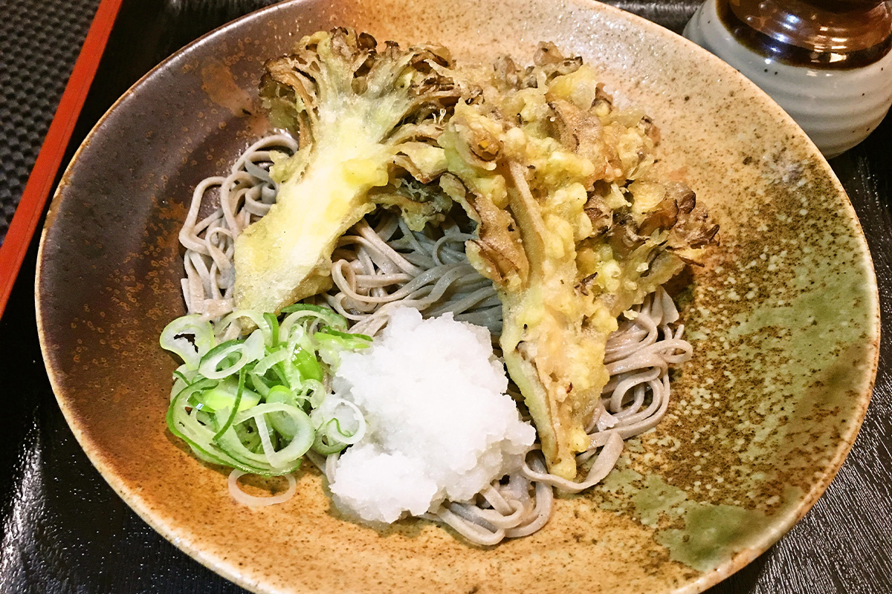
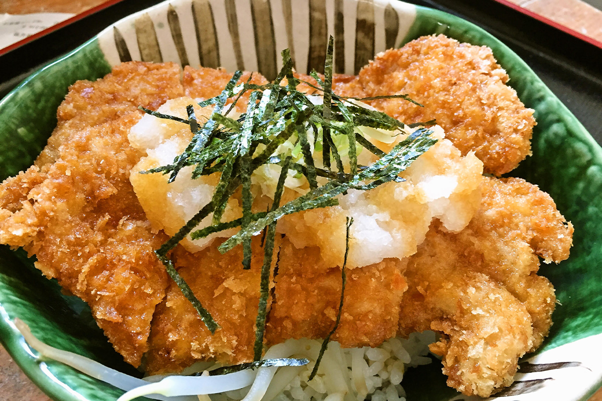
«Мэйсуй тэути соба Осёдзу»
- Адрес
- префектура Фукуи, Оно, Идзуми-тё, 3-8
- Телефон
- +81 779-66-2595
- Часы работы
- 11:00–14:00, 17:30–23:00 (вход до 20:00); воскресенье и праздники 17:30–22:00 (вход до 20:00)
- Выходные
- среда, вечер понедельника и третьего воскресенья месяца
- Сайт
- facebook.com
Itajin: рёкан с 400-летней историей
Рёкан стоит на улице Хоммати, которая когда-то была сердцем города при замке Кацуяма и сохранила старую застройку. Itajin работает около 400 лет. О его прошлом со времён Эдо рассказывают постройки и вещи: склад с гостевыми комнатами, внесённый в реестр культурного наследия, самурайский дом примерно 200-летней давности, который служит столовой, утварь и произведения искусства в комнатах.
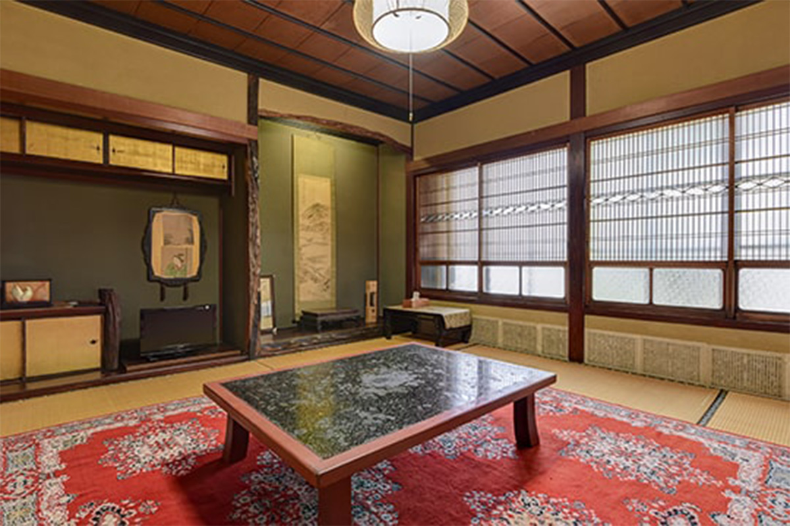
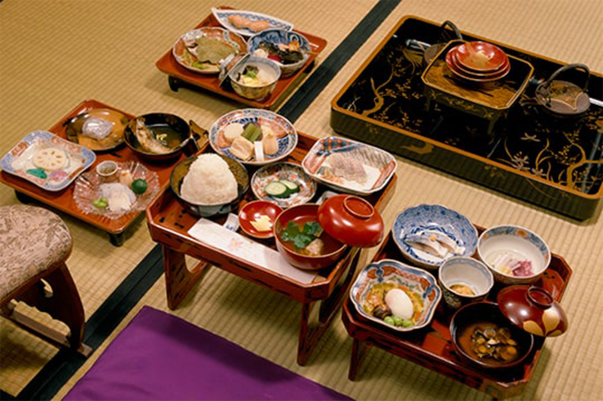
Рёкан Itajin
- Адрес
- префектура Фукуи, Кацуяма, Хоммати, 2-5-14
- Телефон
- +81 779-88-0020
- Номера
- 10
- Заезд / выезд
- 16:00–19:00 / 10:00
- Сайт
- itajin.com
Музей динозавров префектуры Фукуи
Музей принимает больше 900 000 посетителей в год и множество учёных. Всё началось в 1982 году, когда здесь нашли полный скелет древнего родственника крокодилов, а в 1989 году начались первые раскопки окаменелостей динозавров. Куполообразное здание спроектировал архитектор Кисё Курокава (1934–2007).
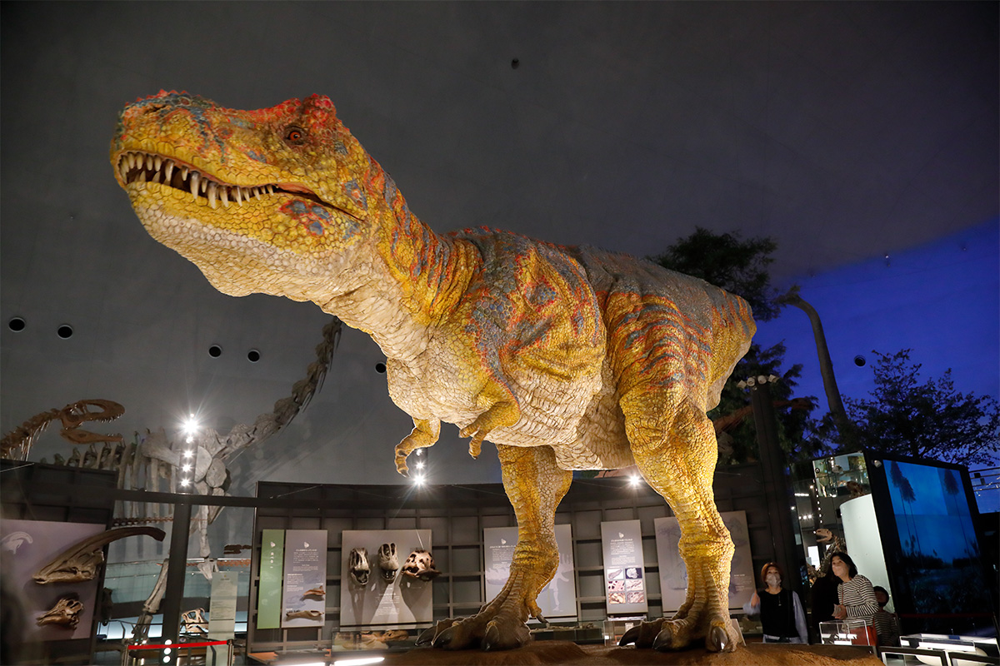
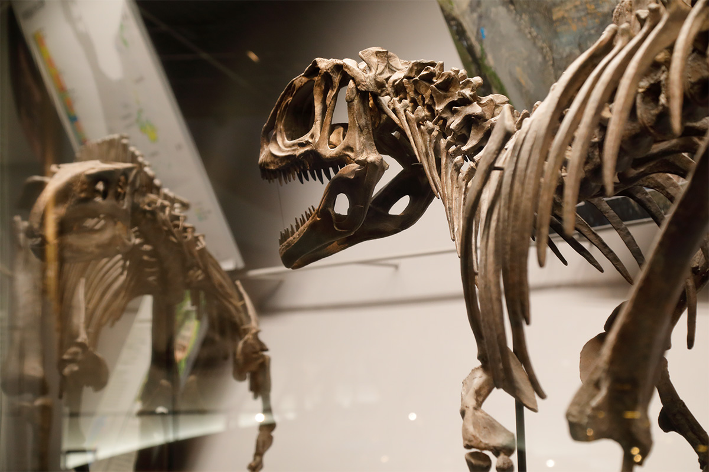
С 5 декабря 2022 года музей закрывали на обновление до лета 2023 года.
Музей динозавров префектуры Фукуи
- Адрес
- префектура Фукуи, Кацуяма, Мураока-тё, Тэрао, 51-11
- Телефон
- +81 779-88-0001
- Часы работы
- 9:00–17:00 (вход до 16:30), по предварительной записи
- Выходные
- вторая и четвёртая среда месяца
- Цены / Вход
- взрослые 730 иен, старшеклассники и студенты 420 иен, школьники 260 иен
Озеро Кудзурю
Это искусственное озеро появилось, когда реку Кудзурю перегородили плотиной. Оно славится осенними клёнами и сакурой, а по берегам много мест для кемпинга, каноэ и каяков. Вид на всё озеро открывается с моста «Юмэ-но какэхаси», или Хакогасэ: его построили как пробную модель для большого моста Сэто-Охаси.
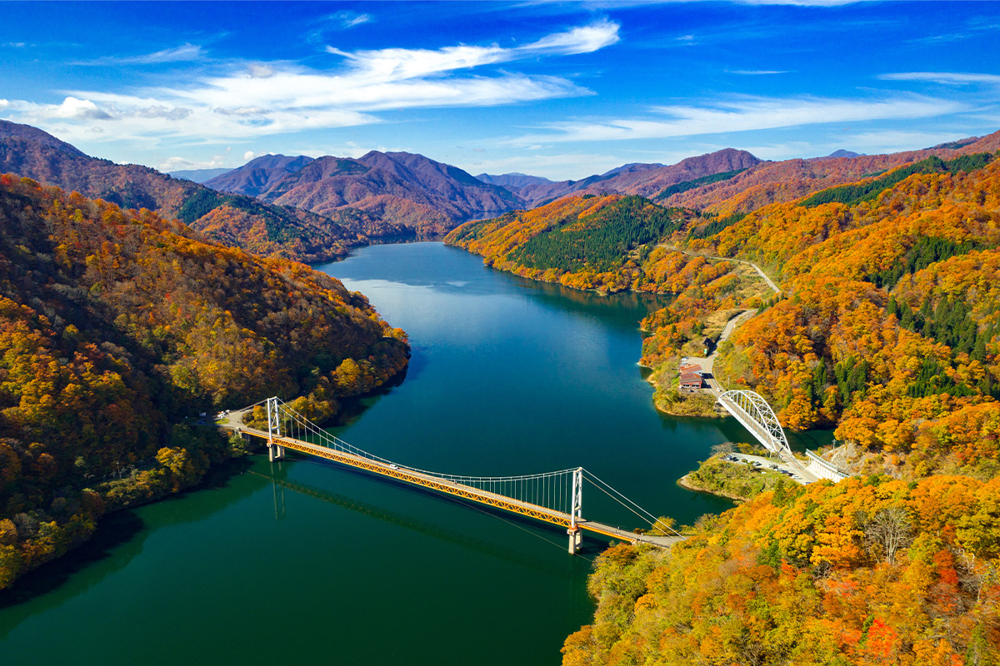
Озеро Кудзурю
- Адрес
- префектура Фукуи, Оно, Хакогасэ (верховья реки Кудзурю)
- Телефон
- +81 779-65-5521 (ассоциация туризма Оно)
- Сайт
- ono-kankou.jp
Momonga Coffee
Кофейня сама обжаривает зёрна, отобранные по всему миру, и заваривает кофе на родниковой воде Оно. Главное правило здесь обжаривать так, чтобы раскрыть вкус местной воды. В меню больше 100 видов кофе: фирменная смесь «Момонга», кофе месяца, напитки на эспрессо.
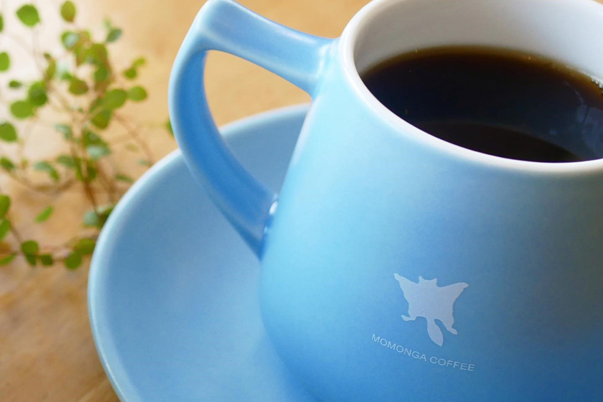
Momonga Coffee
- Адрес
- префектура Фукуи, Оно, Мотомати, 8-17
- Телефон
- +81 779-64-4105
- Часы работы
- 10:00–18:00
- Выходные
- понедельник, вторник, третье воскресенье месяца
Сакэварня «Манацуру»
Родник Осёдзу, хороший рис и подходящий климат сделали Оно известным краем сакэ. Сакэварне «Манацуру» больше 270 лет. Она делает только дорогое сакэ класса гиндзё, и всё вручную. Серию mana1751, которая выпускается на экспорт, можно купить лишь в самой сакэварне и в немногих специализированных магазинах.
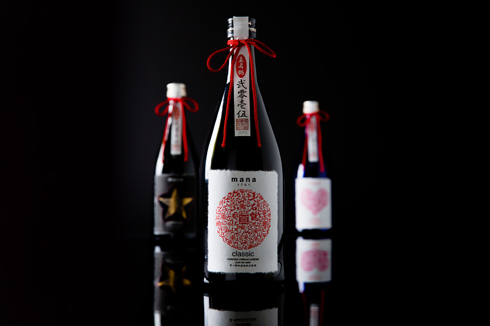
Сакэварня «Манацуру»
- Адрес
- префектура Фукуи, Оно, Мэйрин-тё, 11-3
- Телефон
- +81 779-66-2909
- Часы работы
- 9:00–18:00
- Выходные
- воскресенье, праздники
- Сайт
- manaturu.com
Фото: Кэнто Иида (иллюстрация).